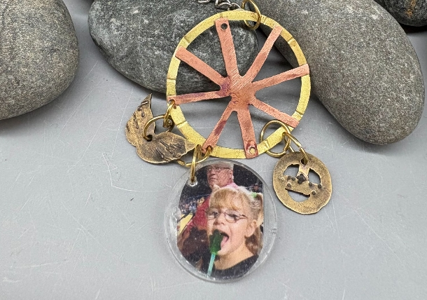

made from the lovely memories of my grandpa
My grandpa was my inspiration. He had a love of sleeping and going to the races so I cut out a dream catcher and a racing wheel to represent his passion of sleeping and watching races, I chose angel wings to represent that he is dead, and he was an angel, he was such a good person, I miss him a lot. The pircing was a bit harder than intended, I used hammer texture to add more to the wheel, it wasn't the easiest, as I messed up a little on the middle, but I think I cleaned it up to make it look better. I am proud of my skills and I think Grandpa would be proud of me too, I miss him a lot.